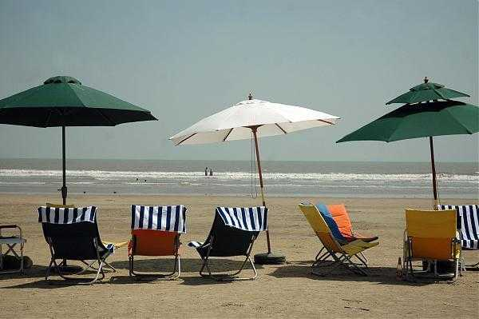

India has an abundant heritage of wildlife. Wildlife comprises animals, birds, plants, insects, etc. that are wild and living in a natural environment or forest. Wildlife is a natural resource that not only helps in maintaining our ecological balance but is also beneficial from the economic point of view that generates revenue from tourism.
The flora and fauna also play a crucial role from recreational and aesthetic points of view. There are about 76000 species of animals in India which encompasses about 82% of known species of the world. India has a large number of varieties of birds, mammals, reptiles, and amphibians as endemic. They all like to live in forests. But, with the increasing human demands, there is constant interference in wildlife.
Due to farming, Urbanization, pollution, and other anthropogenic interventions, biodiversity is shrinking. As a result, several animal species have become extinct
Importance of WildlifeWildlife plays important role in balancing our environmental system as well as providing stability to different processes of nature. Wildlife's importance is found in ecological, economic, agriculture, etc. EcologicalIt maintains the food chain. If we hunt wild animals like carnivores then there is an increase in the number of herbivores animals. It in turn affects our agricultural lands and destroys the crops. In this way, it affects our food. So, it is a predator of each other to balance the ecological system. In other words, all species like animals, birds, and others depend on each other. All species contribute to a balanced nature. |
EconomicalWildlife is a source of recreation and economy as well. From wild plants, we get medicines, timber, fabric, etc. Wild animals give us medicines, wool, Ivory silks, etc. These are substantial sources of economicIn agricultureProduction of a new hybrid using wild plants, for agriculture using wild animals. |
A wildlife sanctuary is an area where animal habitats and their surroundings are protected from any sort of disturbance. The capturing, killing and poaching of animals is strictly prohibited in these regions. They aim at providing a comfortable living to the animals. India has beautiful wildlife sanctuaries, with dense forests, large rivers, high and beautiful mountains.
|
Few of the these in India are mentioned here.
|
Tourism is not permitted in a wildlife sanctuary. People are not allowed unescorted there. The main objective of establishing a wildlife sanctuary is to educate humans as to how to treat the animals. The animals are taken care of and allowed to live peacefully in their natural habitats.
|
There are a number of reasons for establishing wildlife sanctuaries. Some of the reasons are listed below:
|
With one of the world’s longest coastline at its disposal, India has incredibly scenic beaches that offer everything from solitude and sunbathing to parties and adventure. There are numerous beaches in India, entertaining Indian and foreign tourists since a long time. In fact there are some that are coming into the folds of tourism only now, making them virginal and green by all means. Here are the ones that you really shouldn’t miss out on.
Kovalam Beach, KeralaA long stretch of white sandy beach running alongside the Malabar Coast—Kovalam beach has been Kerala’s most popular destination for years, and is one of the best Indian beaches. Located 16 km from Trivandrum, the beach is a union of three coves, namely the Hawa Beach, the Lighthouse beach and the Samudra Beach. Named after the lighthouse perched atop the Kurumkal Hill, the Lighthouse beach is the one most frequented by tourists. Herein you can enjoy some a quiet time with your friend s and family, while also engaging in some beach activities. A most definite beach of interest in Kerala, where there are numerous beaches scattered all along the coast. |
|

|
Palolem Beach, GoaEnclosed by a thick forest of coconut palms in south Goa, Palolem Beach, known for its dolphin-spotting tours, is arguably the state’s most idyllic beach. Its southern end tends to be much busier while the northern stretch is comparatively quieter being surrounded by a picturesque island that you can walk out to during low tide. The Palolem Beach is one of the most interesting beaches, where numerous visitors go to, and of course it being Goa, its status is unparallel. One of the best beaches in India, this is sheer fun. |
Baga Beach, GoaFor those who like long sandy beaches packed with lively shacks and a party atmosphere, Baga beach in north Goa is the perfect destination. Water sports, para sailing, dolphin sightseeing, beach shacks, bars and clubs—you’ll find them all here! The crowd here is young and lively, the music loud, and the atmosphere runs from cheerful to crazy. One of the top beaches in India, this one is for all those who like to go wild, and have all the fun in the world. You can expect some really exciting attractions here. This is one beach that does not sleep! |

|
Beach, Andaman and Nicobar IslandsBestowed with the precious award of ‘Asia’s best beach’ by Time Magazine in 2004, Radhanagar beach is undoubtedly one of the most tranquil beaches of the Andaman Islands. Fine white sand and turquoise blue waters are the hallmark of this beautiful stretch and the beach, situated on Havelock Island, is most commonly known as Beach No 7. The beach is visited by tourists from India and abroad, and it is known for its stunning beauty. One of the best beaches in India, the Radhanagar Beach is where you can spend some quality time at peace. This is where you can indulge in some of the most exciting water sports and adventures. |
|
Varkala Beach, KeralaLying along the edge of stunning cliffs, Varkala Beach is located an hour’s drive north of Trivandrum in Kerala. A haven for sun-bathing and swimming, the beach offers picturesque evening views that extend over the Arabian Sea. The beach is believed to have medicinal and curative properties and a dip in its waters is believed to purge the body of all impurities. One of the top beaches in India, this is for those who want to be amidst pristine nature, and enjoy the beauty of the waters. It is also known as Papanasham Beach, and is regularly visited by tourists from all over India. |
|
Tarkarli Beach, MalvanA long coastline and pristine clear waters make this beach ideal for a romantic escape. Located at the confluence of the Karli River and the Arabian Sea, the Tarkarli beach is popular because of its clear waters, where on a fairly sunny day one can see the seabed up to a depth of 20 ft. One of the most interesting beaches in India, Tarkarli must be visited when you are in a need for some beach therapy. |
|
Arambol Beach, GoaApproached by a winding road that leads through a groove of cashew trees, Arambol beach is Goa’s hippy hangout in the northern part of the state. At a visible distance near the shore of the beach is a scenic freshwater pond which is perfect for swimming. Of course this being in Goa, you can expect it to be one of the best beaches in India where fun is guaranteed. |
|
Varca Beach, Goaseemingly endless strip of sand, Varca beach is a quiet, calm and almost entirely hawker-free beach. Situated about 2 km from Benaulim, the beach is marked by a number of wooden boats, belonging to the fishermen of the city. Known to be one of the cleanest beaches in Goa, Varca makes it easy for visitors to spend some time on the beach in solitude. A perfect place to enjoy some of your most cherished moments with your close ones, this Indian beach is one of the finest of Goa. |
|
Marari Beach, Keralaknown Marari Beach, not far from Alleppey, is perfect for those wanting to explore the Kerala backwaters along with its many beaches. With golden sands and palm trees, the beach are great for sea surfing, water skiing, parasailing and deep-sea fishing. The name Marari originates from 'Mararikulum', a small and sleepy fishing village on the Arabian Sea coast. When you think of spending some quiet time, away from the maddening crowd, think Marari Beach. Add Kerala’s natural magic to it, and you get one of the top beaches in India. |
|
|  |
Mandarmani Beach, KolkataAbout 180 km south of Kolkata, Mandarmani is a sleepy fishing village that is home to a heavenly beach stretching nearly 15 km, making it one of the longest drivable beaches in India. It is also one of the most unpolluted beaches in the country, and supports countless colonies of red sand bubbler crabs. A beautiful place for a weekend getaway Mandarmani Beach has recently gained much attraction from tourists, especially from West Bengal. It is definitely one of the best beaches in India. |
Bangaram Island Beach, Lakshwadeepturquoise-hued world of clear, warm seas and silver sand, the Bangaram Island Beach in Lakshwadeep is widely regarded as one of the top ten secret beaches in the world, where tourists are flown in by helicopters during the monsoon season. Silvery beaches and swaying coconut palms make Bangaram a heavenly escapade for travel enthusiasts. Adventure seekers can go diving, snorkelling, sailing and deep-sea fishing. Known to be one of the finest beaches in India, this is heaven on earth. |

|
A hill station is often a town located at a high elevation more above the sea level, valley or plains that surround it. There are various reasons for doing such; it might be built to serve as a refuge place or to escape the heat during the summer.
In India, it is often at an altitude of 1000 – 2500 meters approx. The most popular hill stations in India are Shimla, Mussourie, Dehradun, Ooty, Kodaikanal, and for a considerable part of the year, they are crowded with tourists.
In most hill stations, there is usually a central road, or a mall road that caters is the commercial center. There are 100s of Hill Station in India, examples are-

|
Mount AbuMount Abu is a hill station in western India’s Rajasthan state, near the Gujarat border. Set on a high rocky plateau in the Aravalli Range and surrounded by forest, it offers a relatively cool climate and views over the arid plains below. In the center of town, Nakki Lake is a popular spot for boating. Close by are the centuries-old Dilwara Temples, ornately carved from white marble and of great spiritual importance. |
Araku valleyAraku Valley is a hill station and valley region in the southeastern Indian state of Andhra Pradesh. It's surrounded by the thick forests of the Eastern Ghats mountain range. The Tribal Museum is dedicated to the area's numerous indigenous tribes, known for their traditional Dhimsa dance, and showcases traditional handicrafts. A miniature train runs through Padmapuram Gardens, with its sculptures and tree-top huts. |
|

|
ManaliManali is a high-altitude Himalayan resort town in India’s northern Himachal Pradesh state. It has a reputation as a backpacking center and honeymoon destination. Set on the Beas River, it’s a gateway for skiing in the Solang Valley and trekking in Parvati Valley. It's also a jumping-off point for paragliding, rafting and mountaineering in the Pir Panjal mountains, home to 4,000m-high Rohtang Pass. |
ShimlaShimla is the capital of the northern Indian state of Himachal Pradesh, in the Himalayan foothills. Once the summer capital of British India, it remains the terminus of the narrow-gauge Kalka-Shimla Railway, completed in 1903. It’s also known for the handicraft shops that line The Mall, a pedestrian avenue, as well as the Lakkar Bazaar, a market specializing in wooden toys and crafts. |
|
MunnarMunnar is a town in the Western Ghats mountain range in India’s Kerala state. A hill station and former resort for the British Raj elite, it's surrounded by rolling hills dotted with tea plantations established in the late 19th century. Eravikulam National Park, a habitat for the endangered mountain goat Nilgiri tahr, is home to the Lakkam Waterfalls, hiking trails and 2,695m-tall Anamudi Peak. |
|
KhajjiarKhajjiar is a hill station in the north Indian state of Himachal Pradesh. Dating from the 12th century, Khajji Nag Temple is dedicated to a serpent god. Nearby, the high-altitude Khajjiar Lake is surrounded by cedar forest. West, Kalatop Wildlife Sanctuary is home to animals including deer and bears. Farther west, Dalhousie is a hill station with mountain views, dotted with temples and 19th-century British churches. |
|
Hill Station in India can also be a tourist attraction due to its usage in the olden days and its structure. The typical activities on the hill stations involve walks in the nature afforded in a cooler environment and a more natural setting. Horse-riding is another of such popular activities. The newer trend is to have some more adventure sports such as rock climbing, bungee jumping and river rafting, paragliding, etc. While packing for a visit to the hill station, one must remember to take sensible clothing and footwear. Since one can expect cold weather, keeping some warm clothes is helpful. Keeping some essential medications for cough and cold may be beneficial too. A visit to the hill station can be a great visit. Hill stations serve a different purpose, ranging from sanitaria and for relaxation as of then and as of the present world, for tourism. |
LakesLakes are those static bodies of water on the land surface which are surrounded by lands on all sides and are always located on the land surface. There is wide range of variation in the size of lakes. Some lakes are as small as ponds having a meagre areal extent of a few square metres while some lakes are as large as the Great Lakes. Lakes are also called as inland standing water but this is not always true as some lakes are also located along the sea coasts e.g. Chilka lake in Orissa. Lakes are not permanent features on the earth’s surface. Lakes are formed, developed and are ultimately obliterated due to siltation and upliftment of lake beds due to diastrophic movements, for example, several lakes have disappeared in the Kumaun region of Uttaranchal e.g. Sukha Tal (‘tal’ means lake or pond, Sukha Tal means dry lake) and Saria Tal (means rotten lake) around Nainital town. Lakes, thus, may be defined as non-permanent features of static waters on the land surface. |
Wular LakeWular Lake, also known as Wolar in Kashmiri, is one of the largest fresh water lakes in South Asia. It is located near Bandipora town in Bandipora district of Jammu and Kashmir, India. The lake basin was formed as a result of tectonic activity and is fed by the Jhelum River and stream madhumati. |
|
Dal LakeDal is a lake in Srinagar, the summer capital of Jammu and Kashmir. It is an urban lake, the second largest lake in Jammu and Kashmir, and the most visited place in Srinagar by tourists and locals. |

|
Chandra Tal LakeChandra Tal is a lake in the spiti part of the Lahul and Spiti district of Himachal Pradesh, India. Chandra Taal is near the source of the Chandra River. Despite the rugged and inhospitable surroundings, it is in a protected niche with some flowers and wildlife in summer. |
|
Badkhal LakeLake was a natural lake situated in Badkhal village near Faridabad, in the Indian state of Haryana, about 32 kilometers from the national capital of Delhi. Fringed by the hills of the Aravalli Range, this was a man-made embankment. |

|
Sambhar LakeThe Sambhar Salt Lake, India's largest inland salt lake, is located in Sambhar Lake Town, Jaipur district of Rajasthan, India, 80 km southwest of the city of Jaipur and 64 km northeast of Ajmer, Rajasthan. It surrounds the historical Sambhar Lake Town. |
|
Lonar LakeLonar Lake, also known as Lonar crater, is a notified National Geo-heritage Monument, saline, soda lake, located at Lonar in Buldhana district, Maharashtra, India. Lonar Lake is an astrobleme created by a meteorite impact during the Pleistocene Epoch. |

|
Pulicat LakePulicat Lagoon is the second largest brackish water lagoon in India, measuring 759 square kilometres. Major part of the lagoon comes under Tirupati district of Andhra Pradesh. The lagoon is one of the three important wetlands to attract northeast monsoon rain clouds during the October to December season. |
|
Chilika LakeChilika Lake is a brackish water lagoon, spread over the Puri, Khurda and Ganjam districts of Odisha state on the east coast of India, at the mouth of the Daya River, flowing into the Bay of Bengal, covering an area of over 1,100 km². It is the biggest lake of India after Vembanad Lake. |

|
The forests in India are located primarily in Himalayan region and to some extent in Indo-Gangetic plains and Deccan plateau. The total area under forest in India covers 22.8% of the total geographical area. forest area in India is proportionally smaller in comparison to other advanced countries of the world. Our national policy laid down that India as a whole should aim at maintaining one-third of its land under forests, the proportion being 60% in hilly regions and 20% in plains.
|
The main use of forests is for the extraction of timber, and this is always likely to remain the most important use of forests. However, forests have other values which have been increasingly realized in recent years. Among the most important of these is the protection of water resources. Rainfall runs off forested land much more slowly than off cleared land. The trees intercept and retain the moisture on their leaves, or absorb it into their roots and stems, and this ensures a more gradual transfer of water. Soil erosion, caused by rapid runoff, and flooding, caused by too much water entering the rivers at one time, are prevented or considerably reduced. Water-catchment areas are thus usually protected by a forest cover to prevent excessive run-off. Afforestation may even, in some areas, help to improve the climate. If trees can be planted in dry areas, they can protect the soil from wind erosion, prevent excessive evaporation from bare ground, and add moisture to the atmosphere by transpiration, thus slightly modifying humidity conditions. |
Forests also have great value for recreation. They may be beautiful in themselves or may beautify the landscape by adding variety to agricultural districts. They are pleasant for picnics, walks and other outdoor activities, and if they are associated with lakes, as is often the case in catchment areas, they make excellent parks.
Forests are also the homes of many wild animals and birds and these may be watched, as in national parks, or hunted for sport. Forestry and wildlife conservation may go hand in hand in some areas and if properly managed, forests may create a new form of income from tourism.
Some of the famous forests in India are-
Pichavaram Mangrove Forest, Tamil NaduThe region boasts over 50 islands and 4400 canals of various sizes. And there are over 20 different varieties of trees, 200 bird species and several varieties of amphibians and reptiles as well. You can explore this natural paradise by motor boar or rowboat. A friendly tip - opt for a rowboat if you wish to venture deep inside the captivating jungle. And be prepared to be charmed by the sounds of birds, water, and the rustling of paddles. If you plan to visit the Pichavaram mangrove forest, you will have to board a flight to Tiruchirapalli. Chennai international airport is another convenient airport to reach here. |
|

|
Gir Forest National Park, Gujaratprominent abode of Asiatic lions, Gir forest national park, does not need any introduction! Catching a glimpse of the rare Asiatic lions is truly a magical experience. But there is more! You can also spot Indian leopards, jungle cats, Bengal fox, golden jackal and Asiatic wildcats. During your trip, make sure to plan a stay in luxury resorts located nearby. After all, some of the best wildlife resorts in India are situated close to Gir Forest. What’s more to enjoy? Vibrant and colourful tribal festivals that will fill your heart with enthusiasm. If you plan to reach there via flight, Keshod airport (70 km) and Rajkot airport (160 km) are the most convenient airports nearby. |
Andharban Forest, MaharashtraSituated in Maharashtra’ Pimpri region, Andharban literally translates to ‘Dark Forest’. A dense forest covered with thick foliage, misty landscapes and massive waterfalls, Andharban forest is a must-visit for every nature lover. While the serene beauty of this region is enough to draw tourists, the Andharban jungle trek is another highlight. The trek will take you through the dense jungle amidst lush greenery and rocky terrain, definitely a once-in-a-lifetime experience. If you are coming from a different part of the country, booking a flight to Mumbai or Pune can be the most hassle-free way to reach here. From the airport, you can take cabs. |
|
Saranda Forest, JharkhandThe forest is renowned for housing a large number of elephants. You don’t have to go far to encounter other wild animals, including leopards, sambars and bison. The best part? The forest is blessed with stunning waterfalls and towering hills, binding this enchanting place together. To explore the mighty Saranda forest, take a flight to Ranchi. From here, you can hire a taxi to reach the Saranda forest. |
The western part of the great plain of India consists of the Thar or the Great Indian Desert which covers western Rajasthan. The desert is about 650 miles long and 250-300 km wide. Its total area is about 1.75 lakh sq km. About two third of the Indian desert lies in Rajasthan, west of the Aravali Range, and the remaining one third is in the neighbouring states of Haryana, Punjab, and Gujarat. The vast desert is an undulating plain whose average elevation is about 325m above mean sea level.
|
Generally, a barren area of landscape having a very warm climate and receiving less than 25 centimeters of irregular rainfall annually, living conditions are hostile for plant and animal life is called a desert. Indian desert, which is also called the Thar Desert, situated between the Aravalli Mountains and the plains formed by the Indus and Sutlej rivers, is generally referred to as the Indian Desert. The Thor desert spread over the district of Jaisalmer, Bikaner, and Jodhpur of Rajasthan and the Khayerpur and Bahawalpur region of Pakistan. Indian Desert, can be classified into five divisions-Bagar region:It is the foothill of the western part of Aravalli. It is covered with grassland. Massive agriculture is possible through Rajasthan Canal in this region. |
Small Desert Region:It is the western part of Rohi. The actual desert is started in this region.Rohi:Western part of Bagar is called Rohi. It is a fertile land. It is fertile because of the transportation of alluvial soil of the rivers which is originated from the Aravalli range. | |
Marusthali:The meaning of ‘Marusthali’ in Sanskrit is “Land of the Dead”. This area is covered by sand-dune and it is situated on the northwestern side of the Rajasthan state and extends over about 62,000 square km, towards the north of the River Luni.Desert region:It is located to the west of the region and crosses the Indian border into Pakistan. The terrible form of the desert can be seen here. |